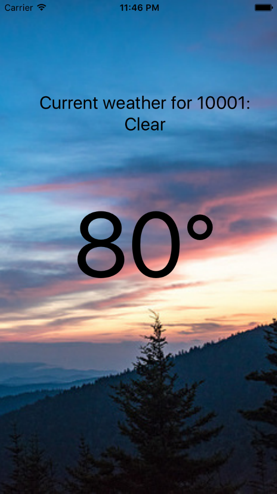

Welcome!
Hey! If you're reading this, you've probably signed up for my workshop at Strangeloop. Nice. You don't need to clone this repository for the workshop; just follow the instructions below.
Setup
Follow the setup instructions from the official docs.
Check if your setup is working by running by generating a new project:
react-native init Weather
Then, build & run the iOS and/or Android applications.
- For iOS, you can open
ios/Weather.xcodeprojin Xcode in order to build it and launch the simulator. - For Android, you should first launch an Android emulator from
android avd, then build and run your application usingreact-native run-android.
Part 1: Components + Styling
Mondrian
Let's start with some styling practice! Here's a screenshot of what the Mondrian app should end up looking like:

Using flexbox and <View> components, try and replicate this in your own application.
Weather app: mockup edition
Next, we're going to focus now on using some basic mobile components from React Native: <View>, <Text>, <Image>, and <TextInput>. Here's what my version of the Weather app looks like:

You'll notice the following attributes:
- Background image
- Current temperature
- Description of current weather
- Location
Try and replicate this in your app, using the above components, as well as appropriate styles. Refer to the docs as necessary.
Part 2: Interactivity + Platform APIs
Developer tools
In this exercise you'll also want to make use of the developer tools. Try the following:
- Open the developer menu from your emulator (iOS or Android)
- Turn on auto reload and try making some style changes - see what happens!
- Add a
debuggerstatement and open the Chrome developer tools - Add a
console.logstatement and view the logged message in the Chrome developer tools (check out the docs for more ways to view log statements, e.g.adb logcator from Xcode)
Touch events
- Make the TextInput interactive! Update the displayed zip code when the user enters text.
Fetch
- Use the OpenWeatherMaps API to fetch the weather forecast & update the displayed text accordingly
Local storage
- When the user inputs a new zip code, save it to local storage
- When the app starts, load the previous location from local storage, if available
Part 3: Cross-platform and Platform-Specific Code
iOS- and Android-specific code
- Make a component that renders differently on iOS and Android (different background colors, perhaps?)
- Using the CutePhotos example as a guide, implement multiple screens in the Weather app, using the appropriate components for iOS and Android, respectively
Update the weather app
- Update your app to make the multiple screens actually useful! Display weather forecasts for the previous 5 locations
Bonus exercises
- Use the geolocation API to display weather based on the user's current location
- Provide settings to toggle between Fahrenheit and Celsius
- Add some animations